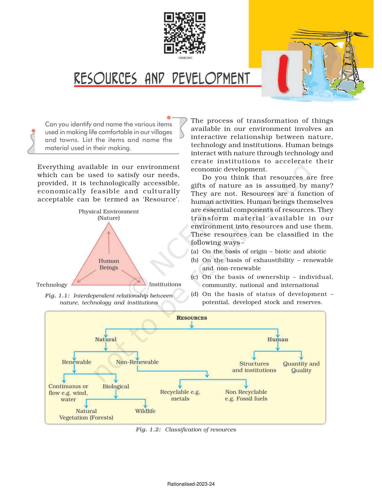
Resources and Development
A responsive web presentation of the supplied 12-page source document. The page artwork is preserved to retain the original typography, diagrams, maps and exercises.
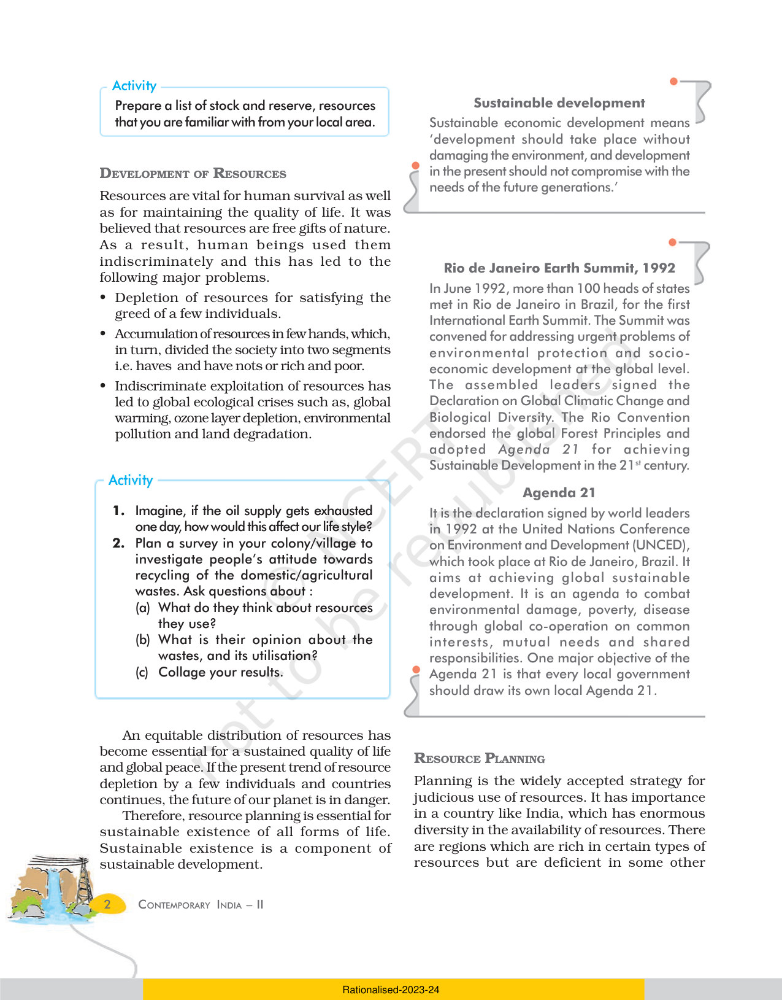
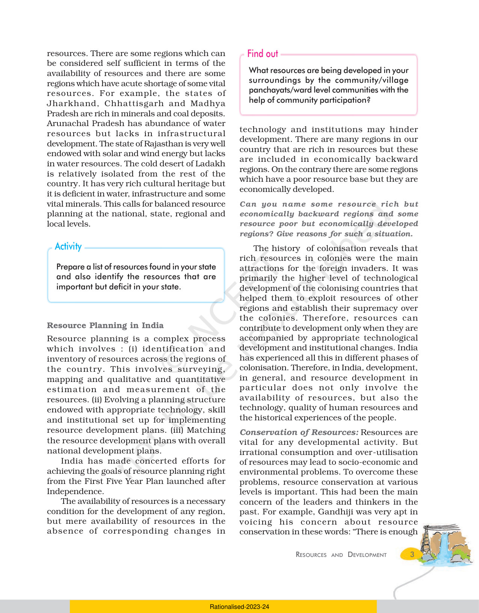
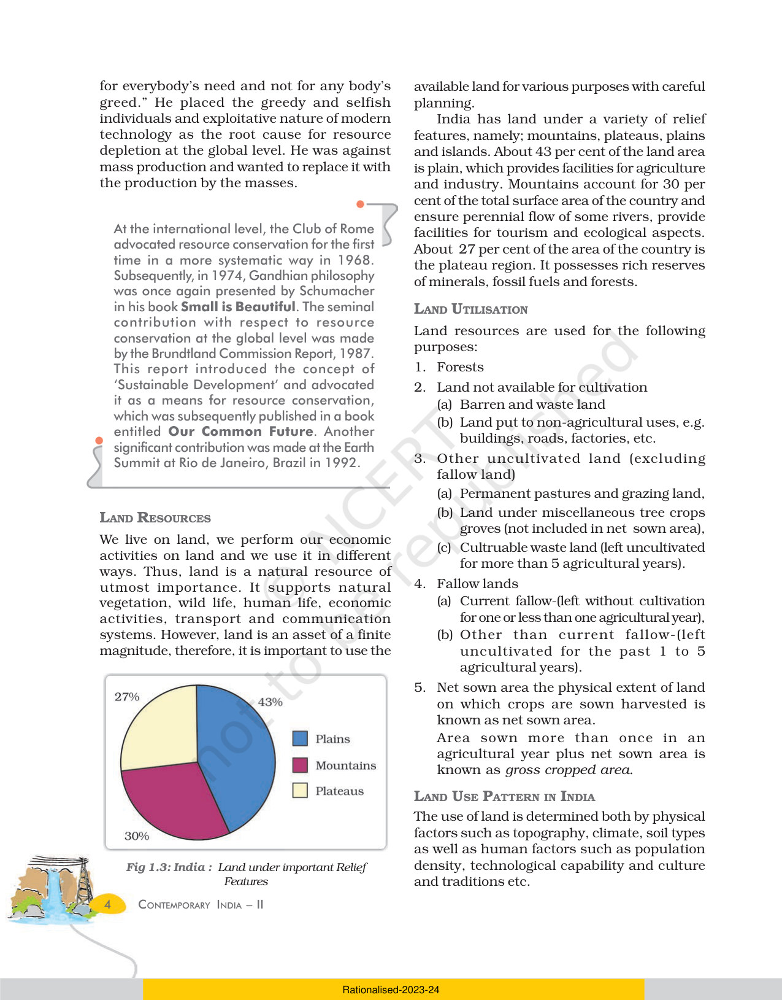
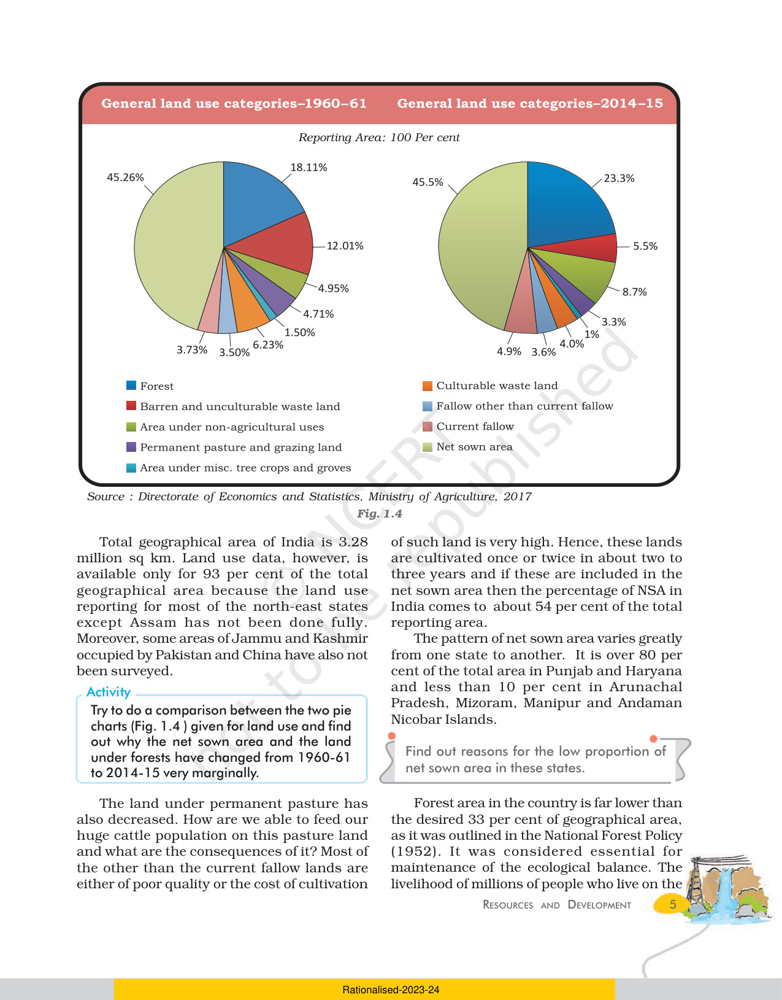
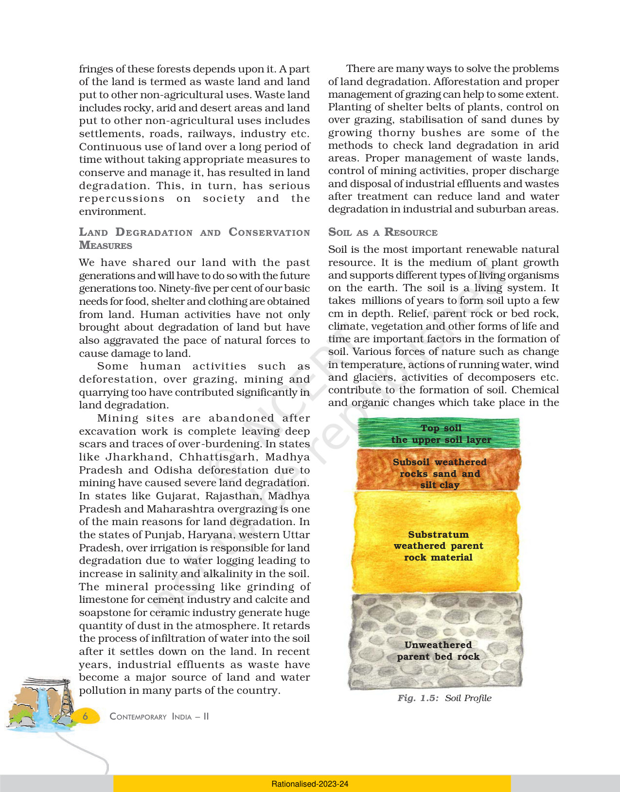
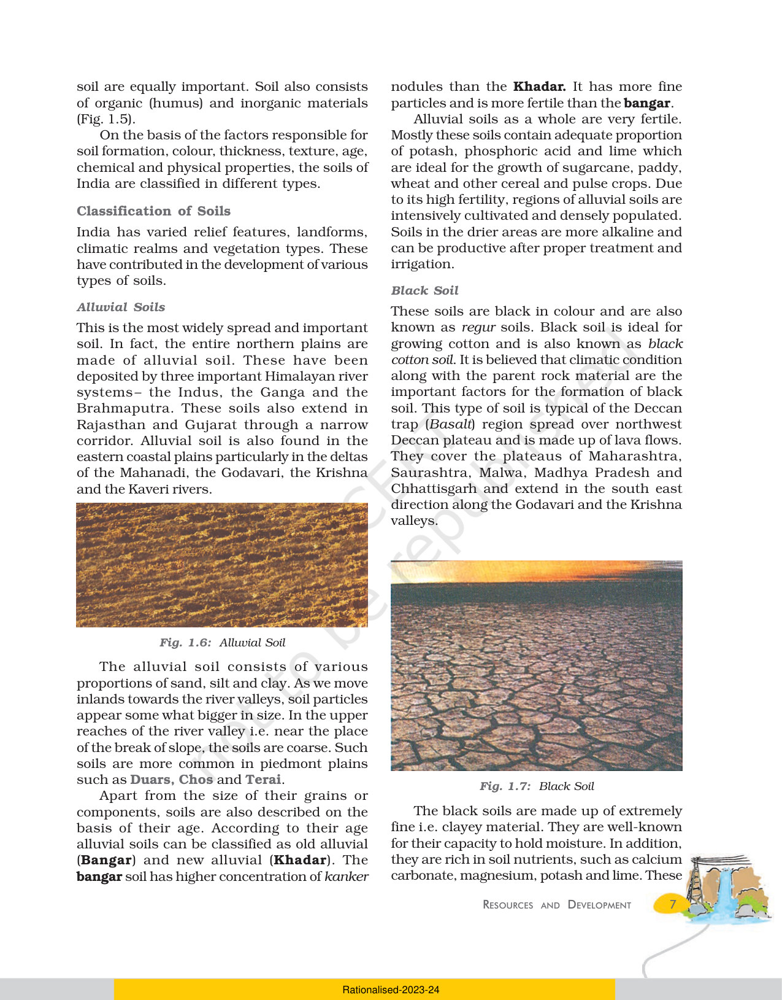
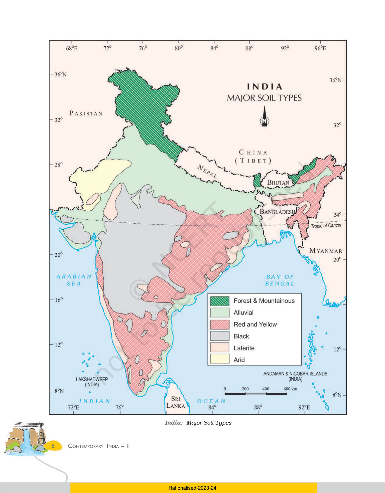
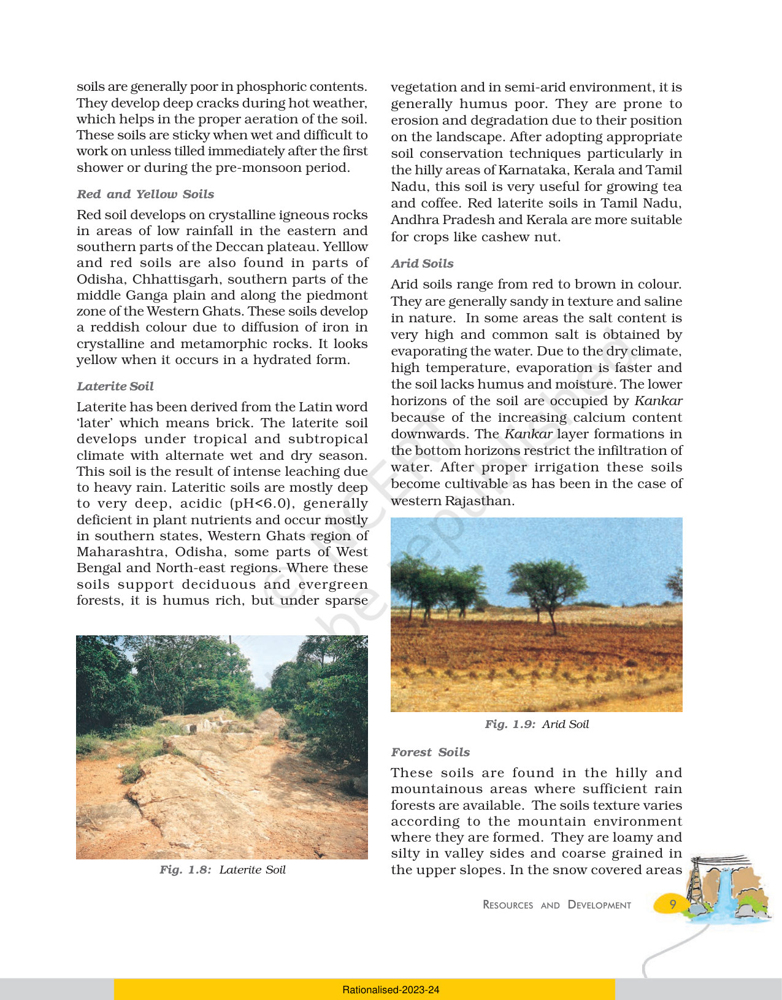
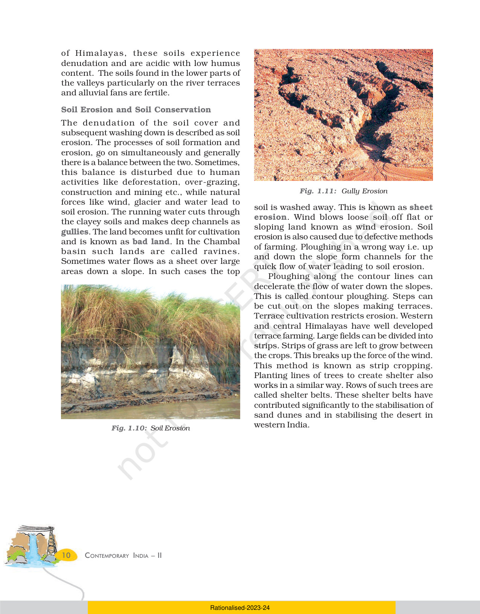
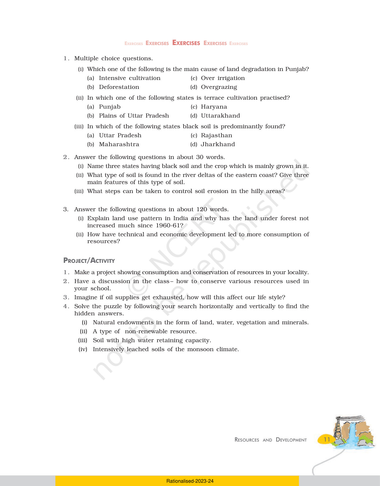
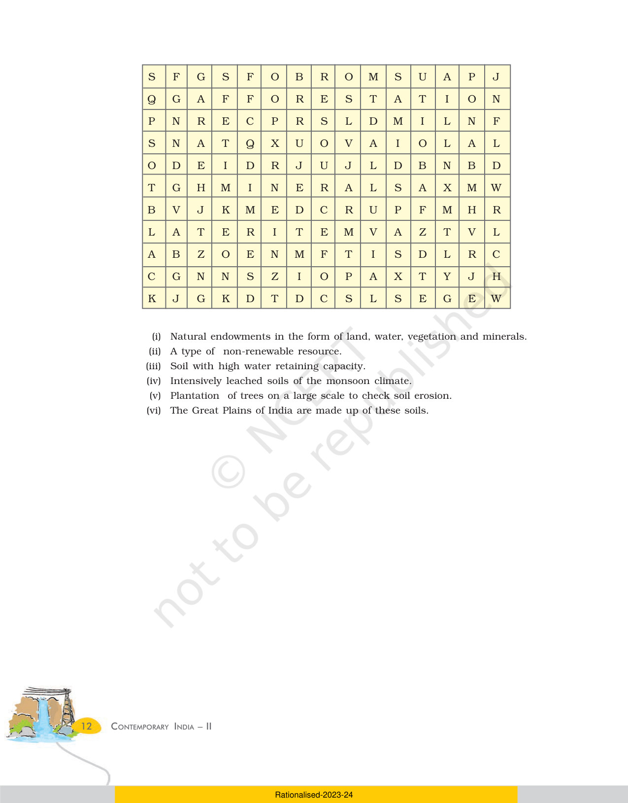